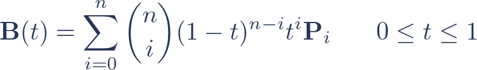
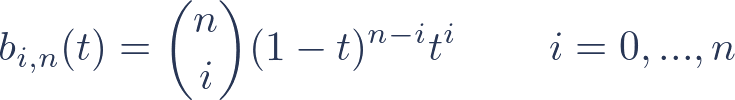
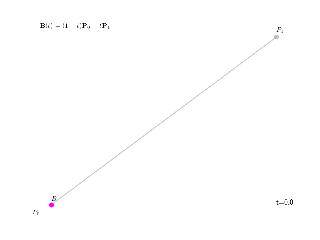
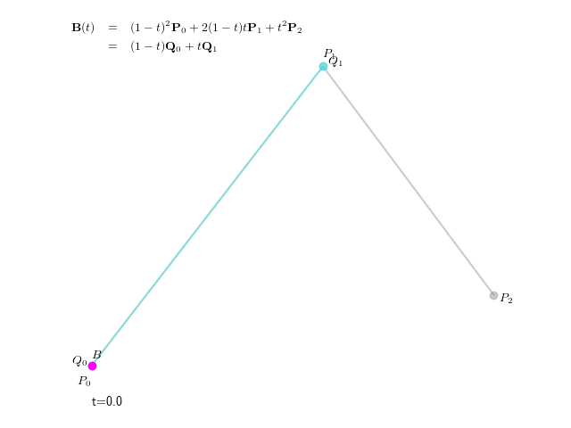
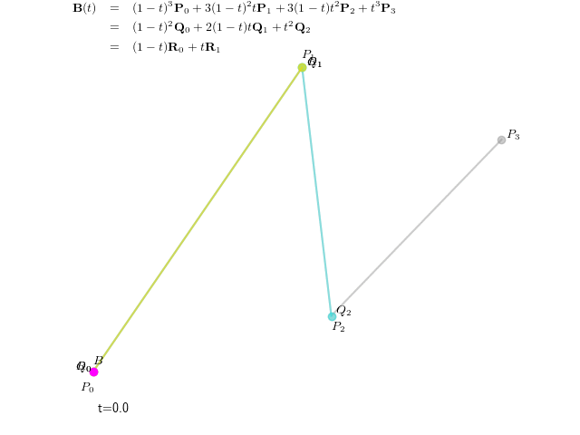

Definition
A Bézier curve is a type parametric curve, completely specified by a set of control points.
An n-th order Bézier curve has n+1 control points P[0],...,P[n], and can be defined as:

Simply put, this means that for each value of t, B(t) is a weighted average of the control points P[0],...,P[n]. As we vary t from 0 to 1, the weight of each control point changes, causing B(t) to trace out a curve on the plane.
Bernstein Polynomials
The weight of each control point varies continuously as a function of t. The functions that we use to calculate the weights are known as the Bernstein basis polynomials. There are n+1 n-th order Bernstein polynomials, defined as:

For example, a quadratic Bézier curve has three control points, P[0], P[1], and P[2]. P[0] has weight b[0,2](t), P[1] has weight b[1,2](t), and P[2] has weight b[2,2](t).
Drag the control points to edit the curve.
Defining Bézier curves recursively
It can also be helpful to think about a recursive definition for Bézier curves. When we draw a first order Bézier curve, we can think of it as interpolating linearly between two control points, tracing out a straight line:

We can think of a second-order (quadratic) curve as a linear interpolation between two first-order curves:

A third-order (cubic) curve, in turn, interpolates between two second-order curves:

This pattern continues for higher order curves, with a Bézier curve of order n being a linear interpolation between two curves of order n-1. If the n-th order curve has control points P[0],...,P[n], then the two lower order curves have control points P[0],...,P[n-1] and P[1],...,P[n], respectively.
Properties of Bézier curves
- A Bézier curve is always contained inside the convex hull of its control points.
- The curve always passes through the first and last control points.
- When the first and last control points are the same, the curve forms a closed loop.
- A Bézier curve can never exactly form a circle.
- To apply any affine transformation to a Bézier curve, we can simply apply the transormation to the control points.